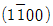
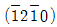
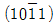

금속재료산업기사 (2011-06-12 기출문제)
1과목: 금속재료
1. 금속분말을 성형ㆍ소결하여 절삭공구, 내마모공구, 광산토목공구 등에 광범위하게 사용되는 초경합금은?
- WC - Co계 합금
- Cu계 합금
- Al계 합금
- Sn계 합금
(정답률: 85%)

2. 주철에 대한 설명 중 틀린 것은?
- 가단주철은 회주철을 열처리하여 제조한다.
- 회주철은 응고 중 유리된 흑연이 편상으로 존재하며 기계 가공성이 우수하다.
- 백주철은 냉각속도를 빨리하여 Fe3C와 같은 탄화물을 함유하여 취약하다.
- 구상흑연주철은 소량의 Mg 등을 접종처리하여 흑연을 구상화한다.
(정답률: 39%)
3. 다음 중 수소저장합금에 대한 설명으로 틀린 것은?
- 수소가스와 반응하여 금속수소화물이 된다.
- 수소의 흡장ㆍ방출을 되풀이하는 재료는 분화하게 된다.
- 합금이 수소를 흡장할 때는 팽창하고, 방출할 때는 수축한다.
- 수소가 방출되면 금속수소화물은 원래의 수소저장합금으로 되돌아가지 않는다.
(정답률: 81%)
4. 복합재료의 특성을 설명한 것 중 틀린 것은?
- 성분이나 형태가 다른 두 종류 이상의 소재가 거시적으로 조합되어 유효한 기능성 재료이다.
- 두 종류 이상의 재료가 미시적으로 조합되어 거시적으로 균질한 합금이다.
- 일반적으로 층상 복합재료, 입자강화 복합재료, 섬유강화 복합재료 등으로 구분할 수 있다.
- 탄소섬유, 케블라섬유 등 고성능 보강섬유를 활용한 복합재료를 고성능 복합재료로 구분하여 사용하기도 한다.
(정답률: 64%)
5. 다음 중 Ni합금이 아닌 것은?
- 콘스탄탄(Constantan)
- 모넬합금(Monel metal)
- 알드레이(Aldrey)
- 엘린바(Elinvar)
(정답률: 65%)
6. 헤드필드강(Hadfield steel) 이란?
- 페라이트계 고 Mn강
- 펄라이트계 고 Mn강
- 오스테나이트계 고 Mn강
- 마텐자이트계 고 Mn강
(정답률: 66%)
7. 특수강에 첨가되는 Ni원소의 특성으로 옳은 것은?
- 인성 증가
- 뜨임 취성 방지
- 결정입자 조절
- 전자기 특성 증가
(정답률: 54%)
8. 탄소강 중 인의 영향이 아닌 것은?
- 적열취성의 원인
- 결정립 조대화
- 강도와 경도 증가
- 상온취성의 원인
(정답률: 69%)
9. 베어링합금이 구비해야 할 조건이 아닌 것은?
- 주조성이 좋아야 한다.
- 피로강도가 높아야 한다.
- 내부식성이 높아야 한다.
- 내소착성이 낮아야 한다.
(정답률: 70%)
10. 다음 중 재결정 온도가 가장 낮은 금속은?
- Al
- Cu
- Ni
- Sn
(정답률: 56%)
11. 오스테나이트계 스테인리스강을 포함한 스테인리스강의 입계부식을 방지하는 방법이 아닌 것은?
- 음극방식을 실시한다.
- 탄화물을 고용시킨 후 급랭하는 고용화처리를 한다.
- C 와의 친화력이 Cr 보다 큰 Ti, Nb, Ta 등을 첨가한다.
- C 의 함량을 0.50% 이상으로 높여 크롬 탄화물을 생성시킨다.
(정답률: 47%)
12. 다음 중 탄소강의 조직이 아닌 것은?
- 펄라이트(pearlite)
- 페라이트(ferrite)
- 시멘타이트(cementite)
- 퍼멀로이(permalloy)
(정답률: 84%)
13. 전율고용체를 만들며 치과용, 장식용으로 쓰이는 white gold에 해당되는 합금은?
- Ag-Pd-Au-Cu-Zn
- Ag-Hg-Sn-Cu-Zn
- Pt-Cu-Pb-Sn-Co
- Pt-Pb-Sn-Co-Au
(정답률: 70%)
14. 약 250℃ 이하의 융점을 가지는 저용용점 합금에 해당되는 것은?
- Sn의 용융점보다 낮은 합금
- Cu의 용융점보다 낮은 합금
- Zn의 용융점보다 낮은 합금
- Co의 용융점보다 낮은 합금
(정답률: 64%)
15. 평균탄성계수가 E이고, 반지름 r인 어떤 환봉강이 P의 하중을 받았을 때 변형률은?
- P/(Eπr2)
- P/E
- E/P
- Eπr2/P
(정답률: 59%)
16. 열간 가공(성형)용 공구강으로 금형 재료에 사용되는 강종은?
- SNCM435
- SKH51
- SPS9
- STD61
(정답률: 82%)
17. 20℃에서 열전도도가 가장 낮은 것은?
- Pb
- Fe
- Zn
- Ni
(정답률: 41%)
18. 소결함유베어링 제조의 소결 공정 순서로 옳은 것은?
- 혼합 → 가압성형 → 예비소결 → 원료 → 본소결
- 본소결 → 혼합 → 가압성형 → 예비소결 → 원료
- 원료 → 혼합 → 가압성형 → 예비소결 → 본소결
- 가압성형 → 원료 → 혼합 → 본소결 → 예비소결
(정답률: 78%)
19. 용강의 탄소량이 정해진 양이 되었을 때 Fe-Mn, Fe-Si 또는 Al 분말과 같은 강탈산제를 충분히 첨가함으로써 완전 탄산시킨 강괴는?
- 캡드 강괴
- 림드 강괴
- 킬드 강괴
- 세미킬드 강괴
(정답률: 78%)
20. 다음 실용 황동 중 Zn의 함량이 5~20% 함유되어 있는 동 합금에 해당되지 않는 것은?
- 길딩 메탈(gilding metal)
- 로우 브라스(low brass)
- 커머셜 브라스(commercial brass)
- 카트리지 브라스(cartridge brass)
(정답률: 55%)
2과목: 금속조직
21. 금속의 강화기구 중 결정립의 크기와 강도와의 관계에 대한 설명으로 틀린 것은?
- 결정립의 크기가 작을수록 강도는 증가한다.
- 결정립계의 면적이 클수록 강도는 저하한다.
- 재료의 항복강도와 결정립의 크기 관계를 Hall-Petch 식이라 한다.
- 결정립이 미세할수록 항복강도 뿐만아니라 피로강도 및 인성이 증가된다.
(정답률: 54%)
22. 금속결합의 특징이라 할 수 있는 것은?
- Coulomb력에 의한 결합
- 가전자의 공유에 의한 결합
- 자유전자의 존재에 의한 결합
- 분극 현상에 의한 결합
(정답률: 69%)
23. 냉간가공(cold working)을 받은 금속에 대한 설명중 틀린 것은?
- 공격자점이 감소한다.
- 밀도가 감소한다.
- 전기저항이 증가한다.
- 연신이 감소한다.
(정답률: 36%)
24. 용융금속의 응고과정에서 주형벽으로부터 나타나는 조직의 순서는?
- 칠드영역 - 주상정 - 등축정
- 주상정 - 등축정 - 칠드영역
- 등축정 - 칠드영역 - 주상정
- 등축정 - 주상정 - 칠드영역
(정답률: 65%)
25. 마텐자이트 조직에 관한 설명으로 틀린 것은?
- 침상조직이다.
- 경도가 대단히 높다.
- 인장강도가 대단히 크다.
- 전연성이 대단히 크다.
(정답률: 65%)
26. 다음 중 변형 전과 변형 후의 위치가 어떠한 면을 경계로 하여 대칭이 되는 현상은?
- 쌍정(twin)
- 전위(dislocation)
- 슬립(slip)
- 회복(recovery)
(정답률: 71%)
27. 다음 중 확산에 대한 설명 중 틀린 것은?
- 온도가 낮을 때는 입계의 확산과 입내의 확산의 차가 크게 되나 온도가 높아지면 그 차는 작게 된다.
- 순금속 중에 동종의 원자가 확산하는 현상을 상호 확산이라 한다.
- 입계는 입내에 비하여 결정의 규칙성이 산란된 구조를 갖고 결함이 많으므로 확산이 일어나기 쉽다.
- 용매 중에 용질이 용입하고 있는 상태에서 국부적으로 농도차가 있을 때 시간의 경과에 따라 농도의 균일화가 일어나는 현상을 확산이라 한다.
(정답률: 68%)
28. 다음 중 순수한 edge 전위선 근처의 원자에 작용하지 않은 변형은?
- 인장변형
- 압축변형
- 뒤틀림변형
- 전단변형
(정답률: 63%)
29. 구리 결정에서 슬립(slip)이 가장 잘 일어나는 결정면은?
- {100}
- {110}
- {111}
- {211}
(정답률: 56%)
30. 확산(diffusion)과 관련이 가장 적은 것은?
- 침탄(carburizing)
- 질화(nitriding)
- 담금질(quenching)
- 금속침투(metallic cementation)
(정답률: 65%)
31. 급냉에 의해 변태된 조직으로 다음 중 경도가 가장 높은 것은?
- 마텐자이트(Martensite)
- 베이나이트(Bainite)
- 오스테나이트(Austenite)
- 펄라이트(Pearlite)
(정답률: 84%)
32. 한 끝을 뾰족하게 만든 도가니 속에 금속을 용해 하여 뾰족한 부분부터 냉각하여 단결정을 만드는 방법은?
- Tammann-Bridgman법
- Czochralski법
- 용융대법
- 재결정법
(정답률: 43%)
33. 86%Ni 을 함유한 Cu-Ni 합금이 있다. 1400℃에서 융체의 Ni 함량이 74%이고, 고체의 Ni 함량이 87%라면, 1400℃에서 Cu-86%Ni 합금 100g 중 고체상은 약 몇 g이 존재하겠는가?
- 7.7g
- 8.7g
- 71.3g
- 92.3g
(정답률: 28%)
34. 2원계 합금상태도에서 일어나는 포정반응식은?
- 액상(L1) ⇆ α고용체 + 액상(L2)
- α고용체 + β고용체 ⇆ γ고용체
- α고용체 + 액상(L) ⇆ β고용체
- β고용체 ⇆ 액상(L) + α고용체
(정답률: 64%)
35. 다음 중 육방정계에서 기저면에 해당되는 면지수는?


- (0001)

(정답률: 50%)
36. 규칙 및 불규칙격자에 관한 설명 중 틀린 것은?
- 호이슬러(Heusler)합금은 3원계 규칙격자이다.
- 규칙, 불규칙 상태는 냉각속도의 영향을 받는다.
- 같은 조성의 합금에서는 규칙합금의 전기저항은 불규칙 합금의 것보다 크다.
- 규칙변태에 의한 격자변형 때문에 규칙화가 일어나면 경도와 강도가 커진다.
(정답률: 56%)
37. 다음 중 고용체 강화에 대한 설명으로 틀린 것은?
- 고용체 강화 합금은 고온 크리프 저항성이 순금속보다 우수하다.
- 황동은 고용체 강화에 의해 강도 및 연성이 감소한다.
- 고용체 강화 합금은 순금속에 비해 전기전도도가 떨어진다.
- 고용체 강화 합금의 항복강도, 인장강도가 순금속보다 크다.
(정답률: 54%)
38. 금속의 변태점 측정법에 해당되지 않는 것은?
- 열 분석법
- 전기 저항법
- 자기 분석법
- 대상 용융법
(정답률: 51%)
39. 재결정 거동에 영향을 주는 요인이 아닌 것은?
- 재결정 이전의 가공도
- 재결정 시작 후의 회복의 양
- 초기 결정 입도 및 조성
- 풀림 온도 및 풀림 시간
(정답률: 62%)
40. 금속간 화합물의 특성을 옳게 설명한 것은?
- 일반화합물에 비하여 결합력이 강하다.
- 어느 성분 금속보다 경도가 높다.
- 일반적으로 성분금속보다 융점이 낮다.
- 구성 성분 금속의 특성이 그대로 나타난다.
(정답률: 49%)
3과목: 금속열처리
41. 오스테나이트 상태로부터 Ms점 바로 위 온도의 염욕 중에 담금질하여 강의 내외가 동일한 온도가 되도록 항온 유지하고, 과냉 오스테나이트가 항온변태를 일으키기 전에 공기 중에서 Ar' 변태가 천천히 진행되도록 하는 열처리는?
- Ms담금질
- 마퀜칭
- 오스템퍼링
- 인상담금질
(정답률: 49%)
42. 진공로에서 단열재가 갖추어야 할 조건이 아닌 것은?
- 열용량이 적어야 한다.
- 단열효과가 커야 한다.
- 흡습성이 있어야 한다.
- 열적 충격에 강해야 한다.
(정답률: 55%)
43. 공석강의 연속냉각변태에서 냉각속도가 빠른 순서에 따라 형성되는 최종 조직의 순서로 옳은 것은?
- 트루스타이트 ＞ 마텐자이트 ＞ 소르바이트 ＞ 조대 펄라이트
- 마텐자이트 ＞ 트루스타이트 ＞ 소르바이트 ＞ 조대 펄라이트
- 트루스타이트 ＞ 마텐자이트 ＞ 조대 펄라이트 ＞ 소르바이트
- 마텐자이트 ＞ 조대 펄라이트 ＞ 소르바이트 ＞ 트루스타이트
(정답률: 78%)
44. 다음 중 가스 질화법의 특징이 아닌 것은?
- 경화에 의한 변형이 적다.
- 질화 후의 수정이 불가능하다.
- 고온으로 가열되어도 경도는 낮아지지 않는다.
- 처리강의 종류에 제약을 받지 않는다.
(정답률: 55%)
45. 서냉된 1.2%C의 과공석강을 A1 변태온도 직상에서 생성되는 초석 시멘타이트의 중량 분율은 약 얼마인가? (단, 공석점은 0.8%C 이며, C 의 최대 고용량은 6.67% 이다.)
- 6.8%
- 88%
- 50%
- 93.2%
(정답률: 38%)
46. 진공로에 사용하는 냉각용 가스 중 냉각효과가 가장 큰 것은? (단, 공기의 열전도율은 1이다.)
- 아르곤
- 헬륨
- 질소
- 일산화탄소
(정답률: 46%)
47. 흑연의 형상에 따라 주철을 분류할 때 흑연의 형상이 없는 주철은?
- 백주철
- 회주철
- 가단주철
- 구상흑연주철
(정답률: 62%)
48. 가스침탄처리시 강재의 표면에 그을음(sooting)이 생성되는 원인을 설명한 것 중 옳은 것은?
- 케리어 가스의 탄소 포덴셜이 낮을 때
- 케리어 가스에 소량의 H2 나 CO2 가 잔존할 때
- 침탄성 분위기 가스로부터 유리된 탄소가 노내에 부착하였을 때
- 침탄성 가스에 불순물로 소량의 암모니아 가스가 존재할 때
(정답률: 70%)
49. 주철의 연화풀림 목적이 아닌 것은?
- 연성 향상
- 절삭성 향상
- 경도 향상
- 백선부분의 제거
(정답률: 57%)
50. 담금질에 따른 조직의 팽창 · 수축에 대한 설명으로 가장 옳은 것은?
- 오스테나이트가 마텐자이트로 변태하는 것은 수축이다.
- 오스테나이트가 페라이트로 변한 것은 팽창이다.
- 완전히 펄라이트로 되면 마텐자이트보다 팽창량이 크다.
- 펄라이트 양이 많을수록 팽창량이 많아진다.
(정답률: 40%)
51. 강을 가열하여 냉각제 속에 넣었을 때 냉각되는 단계를 바르게 나열한 것은?
- 증기막단계 → 비등단계 → 대류단계
- 증기막단계 → 대류단계 → 비등단계
- 대류단계 → 비등단계 → 증기막단계
- 대류단계 → 증기막단계 → 비등단계
(정답률: 82%)
52. 강의 항온변태에 대한 설명 중 틀린 것은?
- 항온변태곡선 코(nose) 위에서 항온변태 시키면 마텐자이트가 형성된다.
- 항온변태곡선을 TTT(Time Temperature Transormation) 곡선이라고도 한다.
- 항온변태곡선 코(nose) 아래의 온도에서 항온변태 시키면 베이나이트가 형성된다.
- 오스테나이트화 한 후 A1 변태온도 이하의 온도로 급랭시켜 시간이 지남에 따라 오스테나이트의 변태를 나타내는 곡선을 항온변태곡선이라 한다.
(정답률: 64%)
53. 심냉(sub-zero)처리의 장점과 거리가 먼 것은?
- 시효 변형 방지
- 결정립 성장의 방지
- 경도 증가 및 내마모성 향상
- 담금질한 강의 조직 안정화
(정답률: 57%)
54. 다음 중 잔류 오스테나이트가 증가하는 경우는?
- 담금질 온도가 저온인 경우
- 심냉(sub-zero)처리를 하는 경우
- C%의 양을 감소시켰을 경우
- Ms ~ Mf 지점에서 서냉한 경우
(정답률: 58%)
55. 강의 담금질 경도는 강 중의 탄소량에 의해 변화된다. 0.4%C의 최고 담금질 경도(HRC)는?
- HRC 60
- HRC 50
- HRC 35
- HRC 25
(정답률: 50%)
56. 가열로에 사용되는 내화재 중 원자가가 3가인 금속 산화물내화재이며, 알루미나(Al2O3)를 주성분으로 하는 내화재는?
- 산성 내화재
- 염기성 내화재
- 알칼리성 내화재
- 중성 내화재
(정답률: 39%)
57. 일반적으로 가열온도가 지나치게 높으면 열처리 제품에 어떤 현상이 나타나는가?
- 경도가 높아진다.
- 산화 및 탈탄이 일어난다.
- 결정립이 미세화 된다.
- 항온변태가 나타난다.
(정답률: 78%)
58. 강선, 피아노선재 등에 적용되는 것으로 오스템퍼링 열처리 온도의 상한에서 미세한 소르바이트조직을 얻는 열처리 방법은?
- 블루잉
- 파텐팅
- 마템퍼링
- 시간담금질
(정답률: 56%)
59. 경화능을 향상시킬 수 있는 방법으로 가장 적당한 것은?
- 질량 효과를 크게 한다.
- 담금질성을 증가시키는 Co, V 등을 첨가한다.
- 오스테나이트의 결정입자를 크게 한다.
- 직경이 작은 제품보다 큰 제품을 열처리 한다.
(정답률: 58%)
60. 담금질 균열이 발생하기 쉬운 경우가 아닌 것은?
- 응력 집중부가 있으면 담금질 균열 발생이 쉽다.
- 오버 히트(Over-Heat)되면 담금질 균열 발생이 쉽다.
- 냉각으로 인한 강 부품의 내 · 외부 온도차가 없을 때 발생하기 쉽다.
- 마텐자이트(Martensite)의 팽창속도가 크면 담금질 균열 발생이 쉽다.
(정답률: 73%)
4과목: 재료시험
61. 다음 중 작업자의 안전에 문제가 되기 때문에 가장 안전하게 취급해야 할 비파괴 시험법은?
- 초음파탐상시험
- 침투탐상시험
- 방사선투과시험
- 자분탐상시험
(정답률: 82%)
62. 표면 육안 조직검사로 판정할 수 있는 것은?
- 상분율
- 내부결함
- 가공방법의 불량
- 조직 및 성분의 불균일
(정답률: 74%)
63. 어떤 기계나 구조물 등을 제작하여 사용할 때 변동 응력이나 반복 응력이 무한히 반복되어도 파괴되지 않는 내구한도를 찾고자 하는 시험은?
- 피로시험
- 크리프시험
- 마모시험
- 충격시험
(정답률: 77%)
64. 와전류탐상검사에 대한 설명으로 틀린 것은?
- 시험 결과를 기록하여 보존할 수 있다.
- 얇은 판 및 도금두께를 측정할 수 있다.
- 표면 아래 깊은 곳에 있는 결함의 검출이 가능하다.
- 관, 환봉, 선 등에 대하여 고속으로 자동화한 능률이 좋은 검사가 가능하다.
(정답률: 73%)
65. 구리판, 알루미늄판 등 연성을 알기 위한 시험방법으로 커핑시험(Cupping test) 이라고도 불리는 시험방법은?
- 경도시험
- 압축시험
- 비틀림시험
- 에릭슨시험
(정답률: 76%)
66. 다음 중 조직량 측정법이 아닌 것은?
- 면적(Area)측정법
- 직선(Line)측정법
- 점(Point)측정법
- 직각(Right angled)측정법
(정답률: 74%)
67. 재료의 영구변형이 일어나지 않는 한도 내에서 응력에 대한 변형률의 비를 무엇이라고 하는가?
- 영율
- 응축비
- 항복응력
- 최대인장응력
(정답률: 50%)
68. 조직검사를 위한 작업 순서를 올바르게 나타낸 것은?
- 부식 → 시편채취 → 연마 → 검경
- 시편채취 → 검경 → 부식 → 연마
- 시편채취 → 연마 → 부식 → 검경
- 연마 → 시편채취 → 검경 → 부식
(정답률: 80%)
69. 로크웰 경도시험에서 사용하는 시험하중이 아닌것은?
- 60kgf
- 100kgf
- 150kgf
- 200kgf
(정답률: 71%)
70. 충격시험에서 해머를 올렸을 때의 각도를 α, 시험편 파단 후의 각도를 β라고 할 때, 충격흡수에너지를 구하는 식은? (단, W는 중량, R는 펜듈럼의 길이이다.)
- WR(cosβ- cosα)
- WR(cosα- cosβ)
- WR(cosα- 1)
- WR(cosβ- 1)
(정답률: 72%)
71. 다음 중 비틀림 시험에서 측정할 수 없는 것은?
- 강성계수
- 비틀림 강도
- 비틀림 파단계수
- 단면 수축률
(정답률: 70%)
72. 굽힘 시험은 굽힘 저항시험과 굴곡시험으로 분류 되는데 다음 중 굴곡시험과 관계있는 것은?
- 탄성계수
- 탄성에너지
- 재료의 저항력
- 전성 및 연성
(정답률: 67%)
73. 비커스경도 시험에 관한 내용이 아닌 것은? (단, P는 시험하중[kgf], d는 압흔 대각선의 평균길이[㎜]이다)
- 비커스경도 값을 구하는 식은 (1.8544 × P)/d2이다.
- 136° 다이아몬드 4각 추를 사용한다.
- 스크래치를 이용한 시험방법이다.
- 질화강이나 얇은 시료의 경도측정에 사용한다.
(정답률: 71%)
74. 금속의 탄성계수에 대한 설명 중 옳은 것은?
- 탄성계수는 온도가 증가할수록 증가한다.
- 탄성계수는 미세조직의 변화에 따라 크게 변화한다.
- 온도증가에 따라 원자의 거리가 증가하고 이에 따라 탄성계수가 증가한다.
- 일축변형율에 대한 측면변형율의 비를 프아송비라 한다.
(정답률: 55%)
75. 시험 전 표점거리 50㎜, 직경 14㎜인 환봉을 최대하중 6400kgf에서 인장시험 한 결과 표점거리 56.75㎜ 직경이 10㎜로 되었을 때 연신율(ε)은?
- 12.5%
- 13.5%
- 14.5%
- 15.5%
(정답률: 63%)
76. 상황성 재해 발생자의 유발원인에 해당되지 않는 것은?
- 작업이 어렵기 때문에
- 소심한 성격 때문에
- 기계설비의 결함이 있기 때문에
- 환경상 주의력 및 집중이 혼란되기 때문에
(정답률: 69%)
77. 다음 중 자분탐상시험법을 적용할 수 없는 것은?
- Fe
- Co
- Ni
- Al
(정답률: 63%)
78. 초음파탐상검사에서 표면으로부터 1파장 깊이 정도의 매우 얇은 층에 에너지의 대부분이 집중해 있고, 표면 부근의 입자는 종진동과 횡진동의 혼합된 거동을 나타내는 초음파의 종류는?
- 종파
- 판파
- 표면파
- 크리핑파
(정답률: 56%)
79. 탄소강의 탄소량을 간단하고 가장 빠르게 검사할 수 있는 검사법은?
- 점프용해법
- 화학분석법
- 마이크로시험법
- 불꽃시험법
(정답률: 75%)
80. 크리프(Creep) 시험에서 1단계 → 2단계 → 3단계 과정을 옳게 나열한 것은?
- 변형속도가 점차 감소 → 정상 변형속도 유지 → 변형속도가 빠르게 증가
- 정상 변형속도 유지 → 변형속도가 점차 감소 → 변형속도가 빠르게 증가
- 변형속도가 점차 감소 → 변형속도가 빠르게 증가 → 정상 변형속도 유지
- 변형속도가 빠르게 증가 → 정상 변형속도 유지 → 변형속도가 점차 감소
(정답률: 75%)